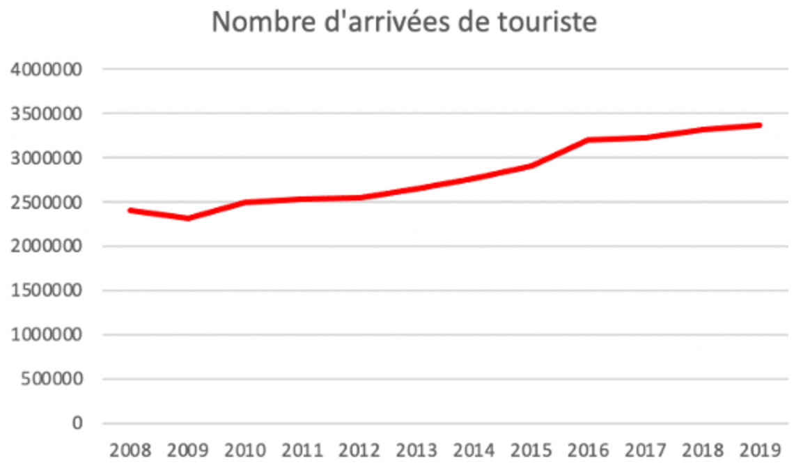

Source : Pixabay
Source : Ministère de la Transition Ecologique
Pour connaitre les origines du
tourisme durable, il est essentiel de déterminer celles du développement
durable.
Le développement durable se définit
comme un mode de développement qui répond aux besoins présents sans
compromettre la capacité des générations futures à répondre aux leurs. C'est
trouver un équilibre entre l'homme, l'économie et la nature. Le développement
durable traduit une volonté de se doter d’un nouveau projet de société pour remédier
aux excès d’un mode de développement dont les limites sont devenues
perceptibles depuis les années 1970.
Limites économiques :
Le développement durable c'est
lutter contre un monde de plus en plus inégalitaire.
On constate une redistribution inéquitable des revenus puisque 70% à 80% ne
restent pas dans le pays d’accueil, cela contribue aux inégalités entre les
pays du Nord, riche et les pays du Sud pauvre. Dans les pays du Sud, les
emplois locaux sont souvent à bas coûts, sans responsabilités, la main d'œuvre
n’a pas accès à la formation. En règle générale, dans toutes les villes
touristiques du monde les prix de l’immobilier et de la vie courante
augmentent, les populations locales ont plus de mal à s’adapter à cette montée
des prix, ils souffrent de cette situation et deviennent précaires.
Limites sociales :
Le développement touristique
entraine une croissance des inégalités entre les riches et les pauvres dans une
même ville ; et entre les pays riches et les pays pauvres. Par manque
d’argent pour vivre, certains sont obligés de se prostituer très jeune. Certains
travailleurs sont exploités, non aucun droit salarial.
En France, ce sont 6 français sur
10 qui ne peuvent pas partir en vacances pour des raisons financières.
Limites environnementales :
Le tourisme et les activités économiques
sont responsable de la destruction d’écosystème pour la construction de
complexe en urbanisant sur des espaces naturels fragiles. Le tourisme est émetteur
de pollution dans l'eau, l'air et les sols. On assiste à un dérangement de la
faune et de la flore à cause de pollution des espaces et des eaux, pollution
visuelle, sonore, olfactive... Certaines activités économiques et touristiques
sont responsables d’une surconsommation d’eau au détriment de la population
locale qui doit faire face à des pénuries d’eau ou à la pollution. 6% des gaz
à effet de serre responsables du réchauffement de la planète proviennent des déplacements
touristiques.
Ce sont à cause de ces limites
que la notion de développement durable et celle du tourisme durable sont
apparues.
Le tourisme durable est défini par
l'Organisation Mondiale du Tourisme (OMT) comme “un tourisme qui tient
pleinement compte de ses impacts économiques, sociaux et environnementaux
actuels et futurs, en répondant aux besoins des visiteurs, des professionnels,
de l’environnement et des communautés d’accueil”.
L’objectif du tourisme durable est
de rendre l’activité touristique compatible avec les enjeux du développement
durable. Le tourisme durable concilie protection de l'environnement, social et économie.
Actuellement, 3 expressions sont
couramment utilisées pour qualifier une même dynamique : Tourisme durable ; Développement
durable du tourisme ; Tourisme responsable.
Le tourisme durable est l’expression traduite de l’anglais « sustainable
tourism », elle est utilisée par les institutions du tourisme au niveau
internationale et national.
Le développement durable du
tourisme est une expression utilisée par des institutions économiques qui
veulent promouvoir une approche globale de l’activité touristique et du développement
durable. Et enfin, le tourisme responsable est une expression utilisée
par les acteurs et les clients, elle fait écho à une responsabilité managériale
des structures touristiques ainsi qu’à la responsabilité directe et à la conscience
sociale du client.
Mais quand on parle de tourisme et
de développement durable, d’autres termes sont souvent utilisés mais ils ne
font pas référence à l’expression de base du tourisme durable défini par
l’OMT. L’amalgame entre tourisme durable, tourisme vert et écotourisme est
souvent fait par les touristes mais également par les offreurs.
Parmi des appellations plus
partielles on trouve : L’éco-tourisme est
pratiqué en milieu naturel. Les notions de préservation du milieu et de bénéfices
socio-économiques locaux sont les éléments fondamentaux de cette activité
touristique.
Le tourisme équitable est le
respect des habitants locaux et de leur mode de vie. Il permet aux communautés
locales une part de revenus et de concilier tourisme et amélioration de leur
condition de vie grâce aux retombées économiques du tourisme.
Le tourisme solidaire est associé
à des projets socio-économiques locaux.
Le tourisme social préconise le
droit aux vacances et l’accessibilité au tourisme à tous les groupes de
populations.
Toutes ces déclinaisons de tourisme
durable convergent toutes vers le respect des autres et de l’environnement.
Le
tourisme durable ne serait pas possible sans différents acteurs.
Il y a trois
acteurs majeurs qui sont : l’OMT, ATD (Association des acteurs du Tourisme
Durable) et Evaneos.
L’Organisation
Mondiale du Tourisme (OMT) est une institution rattachée au Conseil Économique
et sociale de l’ONU. Elle est chargée de la promotion d’un tourisme
responsable, durable et accessible à tous, en veillant aux intérêts des pays
en développement. L’OMT a été créée en 1974 après sa reconnaissance par 51
États. Actuellement l’OMT compte 155 pays et 7 territoires et plus de 400
membres affiliés représentant le secteur privé, des associations de tourisme
et des autorités touristiques locales.
Son
rôle : "L’OMT encourage l’application du Code mondial d’éthique du
tourisme afin de maximiser les bienfaits socioéconomiques du tourisme tout
en limitant à un minimum ses possibles incidences négatives. L’Organisation a
pris l’engagement de promouvoir le tourisme en tant qu’instrument pour atteindre
les objectifs du Millénaire pour le développement (OMD) établis par les
Nations Unies dans l’optique de faire reculer la pauvreté et de favoriser le
développement durable »
L’OMT
a lancé le dispositif « One Planet » pour soutenir d’ici à 2030 la conversion
du tourisme aux pratiques du développement durable, avec comme objectif de
réduire l’impact négatif du tourisme sur l’environnement en multipliant des
innovations écologiques. Il faut maintenir le développement du tourisme tout en
évitant d’épuiser les ressources naturelles.
L’association des acteurs du territoire
durable (ATD) a été créée en 2011 par des journalistes français. C’est un réseau
qui fédère, aide et informe les professionnels du tourisme engagés dans une démarche
de développement durable, il organise des rencontres et met en valeur les
initiatives et bonnes pratiques afin de faire évoluer le secteur vers un
tourisme plus durable et responsable.
Evaneos est une agence de tourisme responsable
qui propose des voyages via son réseau d’agences locales choisies selon des critères
de qualité, les agences doivent participer au développement de l’économie du
pays dans le respect des populations locales et de l’environnement.
L'agence a été certifiée ATR (Agir pour un Tourisme Responsable) par
l’association “Voyageons autrement”. Ce label est la garantie qu’à chaque étape
du voyage, des pratiques conformes aux enjeux du développement durable ont été
respectées.
Les professionnels du tourisme sont des
acteurs importants dans le développement du tourisme durable est, ce sont eux,
qui dans leur pays respectif peuvent adopter une gestion durable de leur
entreprise en permettant plus d’impact positif sur les communautés locales, le
patrimoine culturel et l’environnement naturel.
Le dernier acteur important dans
le développement du tourisme durable est le voyageur. En effet il a libre choix
sur tout, sur sa destination, sur le type d’hébergement, le type d’activités...
c’est au voyageur que revient le choix d’un tourisme durable.
Le tourisme est le principal
secteur socio-économique au monde avec plus de 10% du PIB mondial.
Depuis
quelques dizaines années, le nombre de touristes dans le monde ne fait
qu’augmenter. Or le tourisme, s’il n’est pas bien maitrisé, peut avoir des
impacts négatifs sur l’environnement, l’économie et le social d’un territoire.
Le tourisme durable repose sur l’idée
de faire prospérer les activités touristiques dans le futur, sur le long terme.
Pour cela l’environnement, le social et l’économie doivent être intégrés
durablement. D'où la nécessité de repenser le tourisme autrement.
C’est ainsi qu’en 1995, suite à
la conférence de Lanzarote que les 3 principaux enjeux du tourisme durable ont
été énoncés :
Premièrement, tourisme durable est
synonyme de respect de l’environnement, en préservant la biodiversité et en
limitant l’épuisement des ressources naturelles. L’environnement est la base
des ressources naturelles et culturelles qui attirent les touristes du monde
entier, il est donc nécessaire de protéger l’environnement pour permettre aux
touristes de voyager dans ces pays sur le long terme. De nouveaux aménagements
comme des hôtels responsables permettent de réduire l’impact sur le climat, la
biodiversité, l’environnement.
Le tourisme durable protège aussi
les milieux les plus fragiles, par exemple, les récifs coralliens sont des
lieux riches en biodiversité mais ils sont aussi les plus attractifs pour les
touristes, les plongeurs ou les bateaux de plaisance les rendent fortement vulnérables
aux activités humaines. En 20 ans, la fréquentation des aires protégées a augmenté
de 100%.
Le tourisme est émetteur de
nombreuses pollutions dans l'air, l'eau et les sols et il entraîne de nombreux déchets.
Deuxièmement, le tourisme durable
accorde une importance particulière au respect des populations locales. En
effet, le tourisme de masse accorde une faible importante à la culture locale
et au mode de vie des populations avec trop d’incivilité à leurs égards. Le
tourisme durable veut encourager la tolérance interculturelle et le respect des
modes de vies des populations locales.
Le troisième enjeu du tourisme
durable est celui d’un tourisme équitable du point de vue économique. Développer
des aménagements ou des activités touristiques respectueuses de l’environnement
pour garantir une activité économique viable sur le long terme et une rémunération
équitable des acteurs locaux dans le but de développer l’économie du territoire
et d’améliorer les conditions de vie des populations locales.
Le
développement durable du tourisme apparait comme l’opposé d’un tourisme
classique ou de masse.
Nombreux sont les territoires et
les pays proposant aux touristes une offre de voyage durable.
Le Costa Rica est
depuis longtemps une destination nature et responsable reconnue dans le monde
entier. Mais cela n’a pas toujours été le cas, le tourisme de masse présent
dans ce pays a été responsable de déforestation, de nombreuses plantes et
espèces animales ont été menacés de voies d’extinction.
Face à ces importants effets négatifs,
le tourisme au Costa Rica a évolué pour devenir plus durable.
Ainsi, le tourisme contribue à l’économie
du pays qui peut investir dans la protection de la faune et de la flore et dans
le reboisement.
Actuellement au Costa Rica, il est interdit de couper un arbre
sans autorisation ce qui permet d’éviter la construction de grands complexes hôteliers.
En effet, María Amalia Revelo Raventós, la ministre du tourisme du Costa Rica,
a déclaré que son « pays s’est engagé sur la voie de l’écotourisme avec une
protection forte de la nature. Nous avons choisi d’éviter un tourisme de masse
avec, par exemple, 99% de nos hôtels ont moins de 40 chambres .
Le Costa Rica accorde une
importance particulière à la protection de l’environnement.
Les principaux espaces naturels
protégés sont répertoriés dans cette carte, on y voit des parcs naturels, au
nombre de 26 dans le pays et des réserves de Biosphères. Le Costa Rica abrite
sur son territoire près de 5% de la biodiversité de la planète.
Au total 25,58%
du pays sont des sites protégés et parcs naturels.
On peut voir que les constructions
urbaines sur le territoire sont principalement concentrées au niveau des
grandes villes du pays et s’étendent peu.
Au
Costa Rica, la durabilité de l’industrie du tourisme repose sur une bonne
gestion des ressources naturelles et culturelles, sur l’amélioration de la
qualité de vie des communautés locales et la réussite économique.
Pour cela,
l’Institut du Tourisme du Costa Rica (ICT) a développé en 1997 le programme de
Certification de la Soutenabilité du Tourisme Durable (CST) afin de classer les
hôtels du pays en fonction de leur niveau d’engagement sur la gestion des
ressources naturelles, culturelles et sociales.
Le but est de garantir aux
touristes un choix de professionnels proposant des prestations responsables
pour contourner les pratiques du greenwashing.
La certification est valable 2 ans afin de garantir la continuité de l’engagement, et cette certification repose sur de nombreux critères précis et exigeants. Les entreprises qui veulent obtenir ce label sont évaluées sur les processus internes mis en place qui prennent en compte les interactions avec le milieu naturel environnant (protection de l’environnement, création d’emplois locaux...).
La certification garantit que
l'entreprise en question :
1- prend des mesures pour éviter
les émissions de produits nocifs et la pollution ;
2- applique des mesures de
conservation et de réduction des risques naturels ;
3- gère efficacement les déchets
qu'elle produit ;
4- utilise des produits naturels, biodégradables
ou recyclables ;
5- dispose d'un programme d'économie
de l'eau et de l'énergie ;
6- s'engage à faire découvrir et
à préserver les richesses naturelles du pays ;
7- est conforme aux normes
nationales concernant l'environnement, la faune, le patrimoine archéologique et
les garanties sociales ;
8- fait travailler les communautés
locales ;
9- met en
valeur les traditions et les coutumes du pays, ainsi que les plats typiques et
l'artisanat national.
Les niveaux d’engagements vont de 1 à 5, 5 étant la note la plus élevée. Mais depuis peu, ce système de note a été remplacé par deux appellations : BASIC et ELITE. Certains hôtels ont tout de même conservé le système de note, c’est le cas de l’hôtel Almonds & Corals qui est noté 5. Cet hôtel a été construit en accord avec la nature et les animaux sauvages, l’hôtel est uniquement couvert et les murs sont fait de rideaux et moustiquaires pour ne pas dénaturer le paysage. Grace à l’imagerie satellitaire nous pouvoir voir que l’hôtel est à peine visible, ce qui confirme les valeurs de l’hôtel.
Le tourisme est l’un des moteurs de l’économie du pays puisqu’il contribue pour 10% du PIB du pays et génère 600 00 emplois directs et indirects.
Depuis 2008, le nombre d’arrivées
de touristes au Costa Rica n’a cessé d’augmenter pour atteindre 3 366 000 arrivées
en 2019. Les touristes venus du monde entier sont attirés par l’image que
renvoie le Costa Rica, l’image d’un tourisme durable.
De nombreux autres pays ou
territoire se lance dans un tourisme plus durable car ils accordent une
importance à l’environnement de plus en plus grande. En effet, la destination
touristique est souvent choisie en fonction de ce que propose le pays en termes
de paysage, de climat. C’est pourquoi il est indispensable, pour conserver une économie
touristique, de protéger l’environnement.
Cette carte indique les principaux
espaces proposant un tourisme plus durable aux touristes, avec une importance accordée
à l’environnement et au respect des populations locales tout en assurant la pérennité
économique du pays.
Bien sûr à l’intérieur de chaque
pays, des particulier, hôteliers... peuvent proposer des prestations durables.
Le concept de tourisme durable est
récent, c’est pourquoi il véhicule souvent de fausses idées, le tourisme
durable n’est pas assimilé à un voyage humanitaire, ou à une contrainte
incompatible avec les vacances, ce n’est pas du « greenwashing».
Pratiquer le tourisme durable c’est
prendre en compte plusieurs critères :
- Des prix justes, c’est-à-dire une juste
répartition des richesses entre l’agence, les guides, les acteurs locaux ...
- Une partie de prix du séjour finance un
projet local, par exemple la construction d’une école, la construction de
sanitaire, des aménagements pour que les populations aient accès à l’eau
potable ;
- Favoriser des programmes qui proposent
des rencontres avec les populations locales, une expérience immersive ;- Choisir des activités vertes et locales
pour soutenir l’économie du territoire : participation à des cours de cuisines
dans une famille, assister à un spectacle traditionnel.
Concernant les tarifs d’un voyage
durable, il faut qu’ils soient justes. Mais les prix des hôtels sont assez
fluctuants. Un hôtel qui n’accorde aucune importance à l’environnement peut
avoir un prix par nuit beaucoup plus élevé qu’un hôtel respectueux de
l’environnement. Le tourisme durable ne coûte pas réellement plus cher qu’un
tourisme de masse par exemple.
La conscience écologique d’un touriste
peut l’amener à choisir des voyages avec des prix plus justes, en lien avec
les enjeux du tourisme durable, à savoir la prise en compte de
l’environnement, le respect des populations locales et une rémunération équitable
des acteurs locaux.
Le graphique ci-dessus met en lumière
les prix des hôtels au Costa Rica selon leur localisation et selon leur
Certification de la Soutenabilité du Tourisme Durable. Les prix sont ceux de la
nuitée du 14 février 2022 au 15 février 2022. La sélection des hôtels a été
faite parmi la liste des hôtels pour chaque catégorie.
La première remarque importante
est que l’on trouve des hôtels présentant un score faible et pourtant beaucoup
plus cher que des hôtels respectueux de l’environnement. C’est le cas dans la région
de Guanacaste, un hôtel avec un score 2 coute 500$ la nuit et un hôtel avec un
score 5 coute 246$. L’hôtel le plus respectueux de l’environnement coute 2 fois
moins cher qu’un hôtel de score 2. On remarque qu’il n’y a pas réellement de
corrélation entre les prix d’une nuit d’hôtel et le niveau de soutenabilité.
Voyager durablement est bon pour
le pays d’accueil, pour le budget des touristes et l’économie du pays. Certes
voyager durablement peut avoir un coût selon le pays, et les formules choisir
mais il devient nécessaire pour protéger la planète et ses richesses en
biodiversités.
L’activité touriste a été touchée
pendant la crise du Covid, rendant certains pays très vulnérables car leur
économie repose sur le tourisme.
L’OMT a publié quelques chiffrés
clefs constatant des répercussions du Covid sur le tourisme. Les multiples
confinements dans les pays du monde ont entrainé une chute de 98% du nombre de
touristes internationaux en mai 2020 par rapport à mai 2019.
D’une année sur
l’autre, le nombre d’arrivées de touriste a baissé de 56% entrainant une chute
de 300 millions de touristes et une perte de 320 milliards de dollars pour
l'économie.
Mais cette réduction du nombre de
tourisme peut être une chance pour développer le tourisme durable.
Pour mieux se reconstruire, le
secteur du tourisme doit se tourner vers la durabilité afin d’être plus résilient
et faire face aux éventuelles crises futures. C’est le bon moment pour se
tourner vers un tourisme plus durable sur le plan économique, social et
environnemental, puisque les gouvernements et les secteurs priés s’engagent sur
la voie de la reprise.
Ce modèle durable est possible à condition de
l’anticiper et de d’utiliser le covid pour repartir sur des bases plus saines.
La crise du Covid doit donner lieu
à une restructuration du modèle touristique de masse vers un tourisme durable.
Le Covid a fait prendre conscience
des effets négatifs du tourisme du masse et le tourisme durable est considéré
comme une réelle alternative et opportunité.
En effet, on constate un éveil
d’une conscience écologique plus collective qui influe sur les manières de
consommer et voyager.
C’est le cas en France puisqu’en
2019 il y a eu une hausse de 15% de la pratique du tourisme durable et les prévisions
pour 2020 suivaient la même tendance.
L'activité touristique devra
intègre progressivement les valeurs de la démarche du développement durable.
2 nouvelles formes sont envisagées pour les voyages de l’après Covid :
- Un
voyage dans son pays de vie, avec des transports peu polluants, et qui
permettront de visiter des lieux plus reculés, de découvrir son territoire.
Cette volonté de rester dans son pays pour voyager peut s’expliquer par la
crainte des transports en commun, la volonté de passer du temps avec sa famille
et profiter de la nature pour ceux qui en ont été privés lors des multiples
confinements. Ce voyage est accessible à tous et durable puisqu’il est
respectueux de l’environnement avec peu d’émission de carbone, et respectueux
des populations.
- Un
voyage hors des frontières de son pays, avec une compensation carbone et des
coûts plus élevés. Pour rendre son voyage durable il faudrait préférer de
partir plus longtemps, rencontrer des populations locales et s’enrichir de
leurs façons de vivre, découvrir l’histoire du pays, manger local et dormir
dans des lieux respectueux de l’environnement via des labels présents dans de
nombreux pays du monde comme la Certification de la Soutenabilité du Tourisme
Durable au Costa Rica.
Ce qui fait un voyage durable,
c’est la cohérence des choix de consommation, d’activités et lieux visités, d’hébergement.
C’est aussi découvrir ou redécouvrir notre environnement tout en le préservant.
Le tourisme durable n’est pas synonyme de ne plus voyager mais plutôt de faire
le choix de voyager pour les bonnes raisons. Le développement durable du
tourisme se veut l'opposé d'un tourisme classique ou de masse.
Pour développer l’économie du
tourisme après la crise du Covid, une deuxième solution, opposée à la première
pourrait voir le jour dans certains pays du monde.
En effet, l’arrêt du tourisme et
des services associés ont mis en évidence sa fonction vitale pour l’économie de
certains pays.
Ainsi, lorsqu’il sera possible de
se déplacer librement, on peut imaginer que certains pays proposeront des
voyages à prix cassés défiants les prix plus juste du tourisme durable afin
d’attirer un grand nombre de touristes pour relancer l’économie du pays.
Tout
sera mis en place pour susciter l’envie de visiter ces pays, sans forcément se
tourner vers un tourisme durable.
Du point de vue des touristes,
après une longue période de privation, il y a une réelle volonté de voyager, de
découvrir de nouvelles choses dans de nouveaux pays, sans forcément prendre en
compte le coté durable du voyage.
Le but est de partir pour « redécouvrir la
vie ».
Cependant, la crise du Covid ne
doit pas nous faire oublier les enjeux importants du tourisme durable.
created with
Website Builder Software .